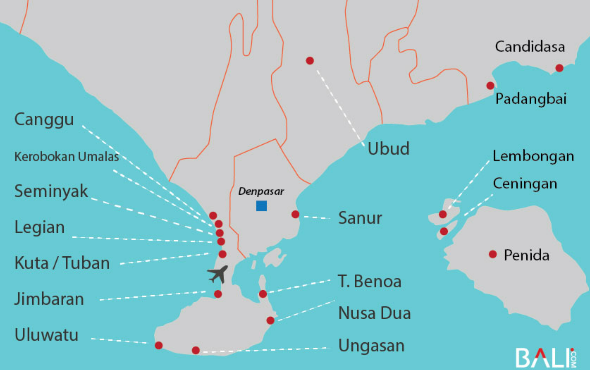

What are the best destinations to visit in Bali?
The most popular and “complete” destinations in Bali are 3 Nusa Islands, Canggu, Ubud, Seminyak and Ulluwatu. Yet, there is no simple answer to this question, which is the best destination in Bali. Each is very different.
Top Destinations in Bali
These destinations are very well developed, very popular and welcome millions of domestic and international tourists every year. Amazing holiday destinations yet also at times crowded and with less of the “authentic Bali flair”.
| DESTINATION | SHORT DESCRIPTION |
|---|---|
| Ubud | Culture, Art, Wellness, Yoga, Nature, Calm |
| Sanur | Quiet, Promenade, Family-Friendly, Traditional Vibe |
| Nusa Dua / Benoa | Luxury Resorts, Weddings, Family-Friendly, Relaxing Beach |
| Canggu / Berawa | Surfing, Digital Nomads, Beach Clubs, Trendy Vibe |
| Seminyak | Luxury, Nightlife, Shopping, Upscale Dining |
| Kuta / Tuban | Party Scene, Affordable, Surfing, Crowded, Backpackers |
| Legian | Beach Vibe, Affordable, Nightlife, Shopping, Families |
| Uluwatu / Pecatu | Cliffs, Surfing, Scenic, Remote, Luxury Villas |
| 3 Nusa Islands | Diving, Adventure, Motor-Free, Scenic Beauty |
| Jimbaran | Seafood, Sunset, Luxury Resorts, Relaxed Vibe |
Beyond Bali
| BEYOND BALI | SHORT DESCRIPTION |
|---|---|
| Lombok | Adventure, Volcanic Landscapes, Pristine Beaches, Trekking, Surfing |
| The Gilis | Island Charm, Motor-Free, Party & Quiet Options, White Sands |
| Labuan Bajo & Komodo | Komodo Dragon, Diving Haven, Natural Beauty, Natural Park, Cruises |
Main Destinations in the South and Center of Bali
Bali's Best Destinations
Canggu
Canggu (including Berawa) is Bali’s most up-and-coming destination. There’s something for everyone, from backpackers to party-goers to digital nomads and spiritual seekers. Very popular among young travelers, and loved by many solo travelers. You can find a good range of accommodation choices, from budget friendly hostels to mid-class hotels and resorts. Plenty of restaurants, coffee shops, bars, beach clubs, gyms, spas, and yoga studios. Burdened by its own success, Canggu struggles with traffic congestion at times. If you can rent and ride a scooter, you will be much better off getting around. Great surf spots.
Ubud
Ubud is known as Bali’s cultural and artistic center where people from all over the globe come to attend seminars and workshops focused on taking care of their mind, body, and soul and finding more balance and well-being in all parts of their lives. Excellent location from which to explore Bali's center and north, including its many surrounding temples, waterfalls, and rice terraces. Many beautiful small shops, cafes, boutiques and since decades, Ubud is a magnet for spiritual seekers. Life is more calm here. Although there are many tourists from the south visiting Bali during the day, which crowds up the main streets. Don't forget to visit one of the traditional dance shows. Ubud is also popular among digital nomads due to its amazing coffee shops, co-working spaces, and healthy food options. The climate is significantly cooler than at the coast.
The Nusa Islands
Lembongan – Ceningan – Penida
3 stunning islands off the coast of Bali
Just 40-50 minutes away by speedboat-ferry, you’ll be transported onto the islands that reflect what Bali was like only several decades ago. Remote, mostly underdeveloped, but stunnning views over beautiful cliffs and white sandy beaches. When the mainland gets a bit too much, the Nusa islands are where people escape to for a quieter time to enjoy the tropical island life. The Nusa islands are also known for their top-of-world dive spots to find all kinds of marine wildlife such as sea turtles, dolphines, mola mola, and manta rays. Cozy Guest Houses and hotels, small cafes and restaurants and lots of “instagrammable” sightseeing spots.
Ulluwatu & Pecatu
The south west coast of the Bukit Peninsular has white sandy beaches in Balangan, Padang Padang, and Bingin. Backpackers, surfers, and now digital nomads love it here. Pecatu, which is quieter and more laid back, is home to some of the best luxury villas in Bali, as well as upcoming 4-5 star resorts in Pecatu with a golf course.
Travel Destinations Beyond Bali - Hop to other Islands and Explore More Wonders of Indonesia
The 3 Gilis
The Gili Islands – Gili Trawangan, Gili Meno, and Gili Air – are a trio of tropical gems off Lombok’s coast, each offering a unique blend of paradise. With no motorized vehicles allowed, they’re a haven for eco-conscious travelers. Gili Trawangan is known for its vibrant nightlife and the iconic Full Moon Party. Gili Meno is a peaceful retreat, perfect for honeymooners. Gili Air strikes a balance with a relaxed vibe, known for its diving spots and local beach cafes.
Lombok
Lombok is a treasure trove of natural wonders, boasting pristine beaches, lush jungles, and thrilling surf breaks. Adventurers can tackle the iconic Mount Rinjani trek, a volcanic hike that rewards climbers with breathtaking views over its crater lake. Lombok’s quieter pace and scenic routes make it an excellent escape and a perfect opportunity for experiencing Indonesia’s untouched beauty.
Labuan Bajo & the Komodo Dragon
Labuan Bajo is a stunningly beautiful beach destination and known as the Gateway to Komodo and the Komodo National Park. Beside Lombok, Labuan and Komodo island are among the most popular destinations for Bali travelers. Dive into crystal-clear waters teeming with vibrant marine life. Island hopping will reveal pristine beaches, including the famous Pink Beach.